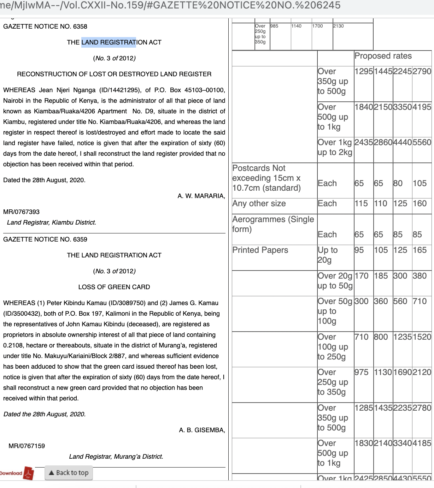
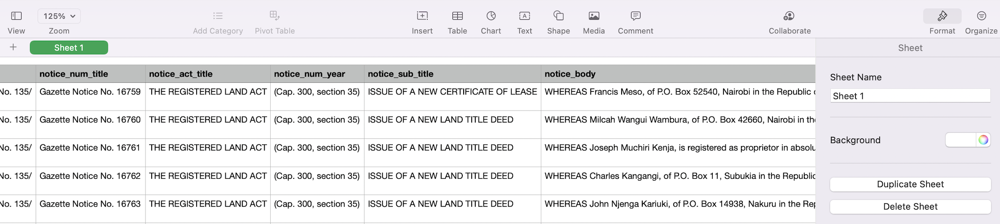

Land-related notices in the weekly Kenya Gazette publications
Github Repository here
Through this project, I scraped the html pages of Kenya Gazette notices from 2010 to retrieve all information related to the Land Registration Act
Here is a screenshot of the home page of the Kenya Gazette website
The resulting database includes over 200,000 rows of data for notices related to:
Issue of a Provisional Certificate of Title
Issue of a Provisional Certificate
Issue of a Provisional Lease
Loss of a Certificate of Lease
Issue of a New Land Title Deed
Cancellation of Title Deed
Reconstruction of Lost or Destroyed Land Register
etc etc etc
Here is a screenshot of an example section within a weekly Kenya Gazette notice referencing the Land Registration Act

Data sources:
Kenya Gazette notices
Districts, areas and population in Kenya
I scraped each notice entry for:
The link for the relevant html page
The year of gazette notice and the url hosting all notices related to that year
THe volume number
The volume date
The volume-specific links
The title of the notice number
The act referenced
The full body of the notice entry
The signing registrar's name
The location of the registrar
The District
THe location code
The population of the district
The area of the district
The capital of the location
The named individual(s)
The area of the land referenced
The title deed number
The individuals' ID
THe individuals' address
The LR number
The municipality
The number of days notice allocates
The succession number
The township
The province
Here is a screenshot of the first few rows and columns of the database generated

Tech: python, beautiful soup, regex